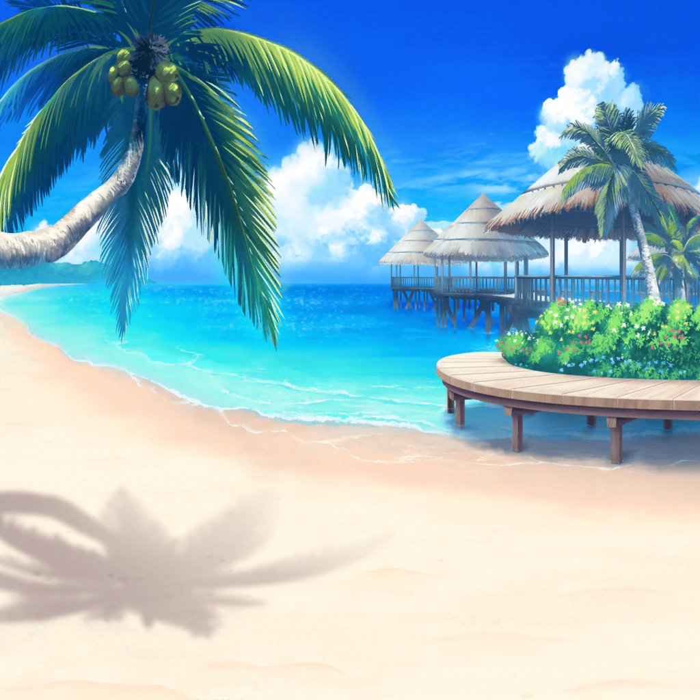

ハピハピ島
花音
わあ、珍しいお土産がいっぱいあるよ、美咲ちゃん
美咲
へぇ、思ったよりいろいろありますね。
この島って、観光客結構来るのかな……？
花音
そういえば、こころちゃんがミッシェルに
たくさんお土産を買ってくって張り切ってたよ
美咲
もらって困らないものだといいんですけどね。
変なお面とかもらっても困るし……
花音
薫さんとはぐみちゃんも一緒に選ぶと思うし、
大丈夫じゃないかな……？
美咲
いやそれ、高確率で変なお面もらう流れでしょ……
美咲
こういうグラスとかだったらもらって嬉しいんですけどねー。
形も面白いし、模様も独特でよくないですか
花音
わあ、キレイだね……
変わった模様だけど、この島の民芸品なのかな？
美咲
ハピハピ島伝統の食器なのかも。
日本じゃ見たことないデザインですよね
花音
あ、こっちのお皿もいいな……
お母さんにプレゼントしたら喜んでもらえるかな
花音
あ、でもこっちも……あ、あっちもいいかも。
うう、いろいろあって迷っちゃうよ
花音
美咲ちゃんはどんなお土産を……
美咲
あ、すみません。お会計してきますね
花音
ええっ！？ 選ぶの早いよ……！
美咲
あたし、基本お土産は定番のものしか買わないんで
花音
定番ってどんなものなの？
美咲
両親へはハピハピ島チョコ。
弟にはハピハピ島Ｔシャツですね
美咲
妹にはキーホルダーをと思ったんですけど……
うーん、改めて手にとってみると味気ないかも
花音
他のお土産もじっくり見てみたらどうかな？
妹さんにぴったりのものが見つかるかもしれないよ？
美咲
そうですね。
時間もあるし、もう少し見てみることにします
花音
うん、それがいいよ。
私もまだ全然決まってないから、一緒に選びたいな
花音
わぁ……このアロマキャンドルかわいいよ。
あ、でも妹さんは使わないかな？
美咲
うーん、まだちょっと妹には早いですね
花音
じゃあ、この石のペンダントはどうかな？
なんの石かわからないけど、とってもキレイだよ
美咲
へぇ、たしかにキレイですね……！
あーでも、これもまだ妹には早いと思います
美咲
デザインはかわいいんですけどね。
まだ小さいんで、うちの妹
花音
あ、それならお人形はどう……？
南の島っぽい雰囲気のお人形があるよ
美咲
あ、ホントだ。結構かわいいし、いいかも……！
これにします。アドバイス助かりました、花音さん
花音
ううん、決まってよかったよ。
私も早くお土産を決めないと……！
美咲
それじゃあ、今度こそお会計してきますね
花音
……あれ？ 美咲ちゃん、自分の分は？
美咲
あ、自分のお土産……
全然考えてませんでした
美咲
ま、お小遣いもあんまりないし、
今回は家族の分だけにしておきます
花音
え？ そ、そうなんだ……
美咲
会計終わったら、そこで待ってますから、
花音さんはゆっくりお土産選んで大丈夫ですよ
花音
う、うん、ありがとう、美咲ちゃん
数分後
花音
美咲ちゃん、お待たせ。
選ぶのに時間かかっちゃってごめんね……
美咲
いえいえ、全然。
のんびりハピハピ島の景色を楽しめたし、いいですよ
花音
えっと、それでね。お礼っていうか、その……
よかったらこれを受け取ってほしいんだ
美咲
え？ いやいや、待ってたくらいでお礼なんて……
花音
あ、その、違うの。待っててもらったことじゃなくて、
いつも美咲ちゃんには助けてもらってるから、そのお礼に
花音
これ……なんだけど
美咲
え……
これって、さっきのペンダント……
花音
美咲ちゃん、キレイって言ってたし
こういうの好きなのかなって思って……
花音
あ、勘違いだったら、ご、ごめんね……
美咲
あ、いえいえ、好きですよ、こういうの。
あの、なんていうか、ありがとうございます
花音
ううん、喜んでもらえたならよかった
花音
せっかく、ハピハピ島に来たんだし、
ひとつくらい思い出に残るものがあったほうがいいと思ったから
美咲
まあ、この島の思い出と言っても、
暗い洞窟の思い出ばっかりですけどね……
花音
あんまり観光みたいなことはできなかったもんね……
美咲
でも、嬉しいです。
大事にしますね、ペンダント